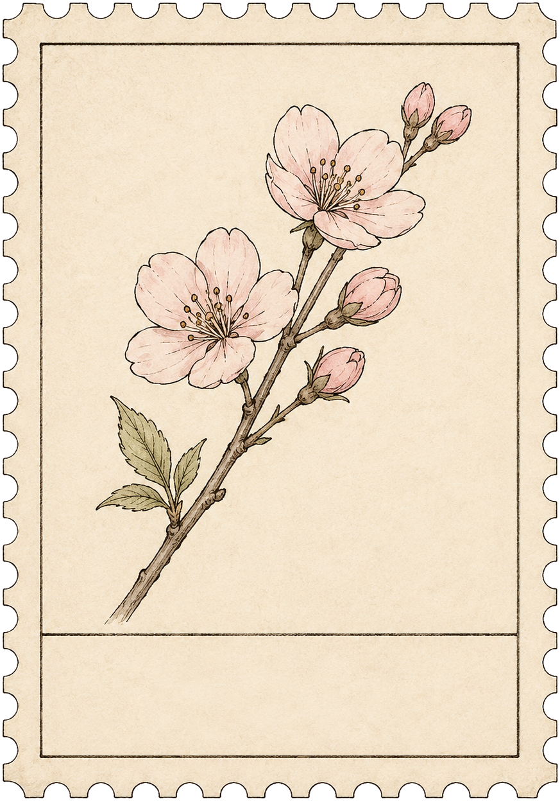
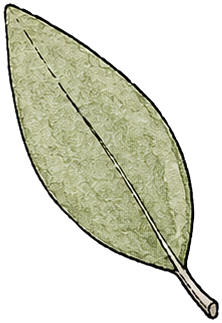
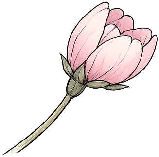

4The letter, take two — the envelope flips to its back, the seal cracks and falls, and the letter writes itself, pen and all, once it's out.⚑ Parked · future work
The animation is built and looks right, but shipping it needs live data + first-open-once behavior + real photo (see FUTURE_WORK.md). Parked as a polished set-piece, not a v1 feature.
4aThe Weekly Letter v2 — flip · crack · rise · unfold · then it writes
Sunday · the letter arrives, then writes
From the garden c/o Kai's Flow
Sun · 6 Jul
Dear Kai —
The forecasting app grew the most this week —
four milestones now, and Thursday was your
longest focused day since May. Fourteen tasks
bloomed — three more than last week.
last Sunday, the balcony
— the garden
Dear Kai —
the garden c/o Kai's Flow

GARDEN POST20
CAIRO
6·JUL
Kai Rahman
14 Nasr St · Cairo
by garden post · wk 28
flat as a scrapbook — the seal gives, it opens, and the week writes itself ✿
The "while it generates" state IS the letter: it comes out blank and is written in front of you, the pen tracing each line. (Earlier letter takes 3a/3b were removed; 2a stays for a future pass.) All generated assets are live: envelope front/back/flap, wax seal + broken halves, dip pen, postage stamp — plus the half-open cherry at the trend tip and real leaves on the vine in 3c. Photo is a drop-in slot.
3Review, revised — "the season so far" gets a stronger trend. (Letter takes 3a/3b removed — superseded by turn 4.)
3c"The season so far" — redone · the focus trend is a climbing vine now
The season so far
reached from the Review page →
Hours by areaThis week vs last
Deep work14H (+3)
Shaheen8H (−1)
Personal5H (+2)
Focus trendFocused hours · last 8 weeks
20h0


W21W22W23W24W25W26W27W28
this week's a bud — 19h in, still opening ✿
Routine consistencyLast 30 days
Journal
100% 🔥6
Vitamins
77%
Stretch
43%
stretch is the one to water next
Blooms this weekTasks completed
14
last week · 11
three more petals down ✿
Hours per projectThis week · 27h total
Forecasting App
10H
Shaheen website
7H
Balcony garden
4H
Reading habit
3H
everything else
1H
The letter opens once on the Sunday review, then folds to a teaser on repeat visits (2b). "The season so far" is reached from the Review page via the new entry card (1a, under "close the week"). Flower ask: the trend uses cherry/bud.png at the tip — a matching half-open cherry for a "20h+" week and a fully-bloomed cherry facing right would let the tip open as focus climbs. Letter photo is a drop-in slot (real image from you).
2Review additions — the Weekly Letter opens the page; "The season so far" gives it numbers.
2aThe Weekly Letter — the page now opens with it, the sweep follows
Dear Kai —
The forecasting app grew the most this week — four milestones now, and Thursday was your longest focused day since May. The balcony garden has gone quiet for twelve days; it might just be resting, but you'd know better than me. Fourteen tasks bloomed, three more than last week. Next week holds the Omar workshop — the seeds you starred tonight are already pointing at it.
2bLetter states — writing · folded · didn't arrive
While it generates — never a spinner
Dear Kai —
the garden is writing…
Folded — the teaser strip on repeat visits
Dear Kai — …unfold
Didn't arrive — printed, not hand-script
The letter didn't arrive this week — the numbers below still tell the story.
2c"The season so far" — 2×2 widgets + hours-per-project band, after the sweep
The season so far
Hours by areaThis week vs last
Deep work14H (+3)
Shaheen8H (−1)
Personal5H (+2)
Focus trendLast 8 weeks
This week's point is a bud — 19h and still opening
Routine consistencyLast 30 days
Journal
100%
Vitamins
77%
Stretch
43%
Blooms this weekTasks completed
14
last week · 11
three more petals down ✿
Hours per projectThis week · 27h total
Forecasting App
10H
Shaheen website
7H
Balcony garden
4H
Reading habit
3H
Blog notes
2H
everything else
1H
Placement on the live page: the letter opens Review (above 1a's header), "The season so far" sits after the sweep, before the journal resurfacing block. Mobile: letter full-width, rotation removed; widgets stack 1-up, bars stay horizontal.
1Weekly Review — the detail pass: the sweep as a walk down the frond
1aDesktop — per-domain sweep mid-walk, slipping + streaks at right
Kai's Flow · Fri 10 Jul · Synced ●Africa/Cairo
Weekly Review · week 28
The sweep
last swept Sun 6 Jul
1 of 3 domains swept
✓Freelance2 projects · 9 open tasks · nothing staleswept 10:02
Personal1 project · 1 area · 6 open taskssweeping…
Balcony garden rebuild3 open · touched Tuestill movingpark it
Area · Home2 open · quiet 12 daysneeds a lookreviewed ✓